pacman::p_load(ggrepel, patchwork,
ggthemes, hrbrthemes,
tidyverse) Hands-on Exercise 2: Designing Graphs to Enlighten
2 Beyond ggplot2 Fundamentals
2.1 Overview
This chapter introduces several ggplot2 extensions for creating more elegant and effective statistical graphics. Key knowledge and skills:
control the placement of annotation on a graph by using functions provided in ggrepel package,
create professional publication quality figure by using functions provided in ggthemes and hrbrthemes packages,
plot composite figure by combining ggplot2 graphs using patchwork package.
2.2 Getting started
2.2.1 Installing and loading the required libraries
Beside tidyverse, four R packages will be used:
ggrepel: an R package provides geoms for ggplot2 to repel overlapping text labels.
ggthemes: an R package provides some extra themes, geoms, and scales for ‘ggplot2’.
hrbrthemes: an R package provides typography-centric themes and theme components for ggplot2.
patchwork: an R package for preparing composite figure created using ggplot2.
Following code chunk check if these packages have been installed and also will load them onto your working R environment.
Troubleshooting:
If hrbrthemes are not yet available for newer version of R, run the following (optional):
if (!require("remotes")) install.packages("remotes")
remotes::install_github("hrbrmstr/hrbrthemes")2.2.2 Importing data
Exam_data will be used which consists of year end examination grades of a cohort of primary 3 students from a local school. It is in csv file format.
The code chunk below imports exam_data.csv into R environment by using read_csv() function of readr package. readr is one of the tidyverse package.
exam_data <- read_csv("data/Exam_data.csv")There are a total of seven attributes in the exam_data data frame. Four of them are categorical data type and the other three are in continuous data type.
The categorical attributes are: ID, CLASS, GENDER and RACE.
The continuous attributes are: MATHS, ENGLISH and SCIENCE.
2.3 Beyond ggplot2 Annotation: ggrepel
One of the challenge in plotting statistical graph is annotation, especially with large number of data points.
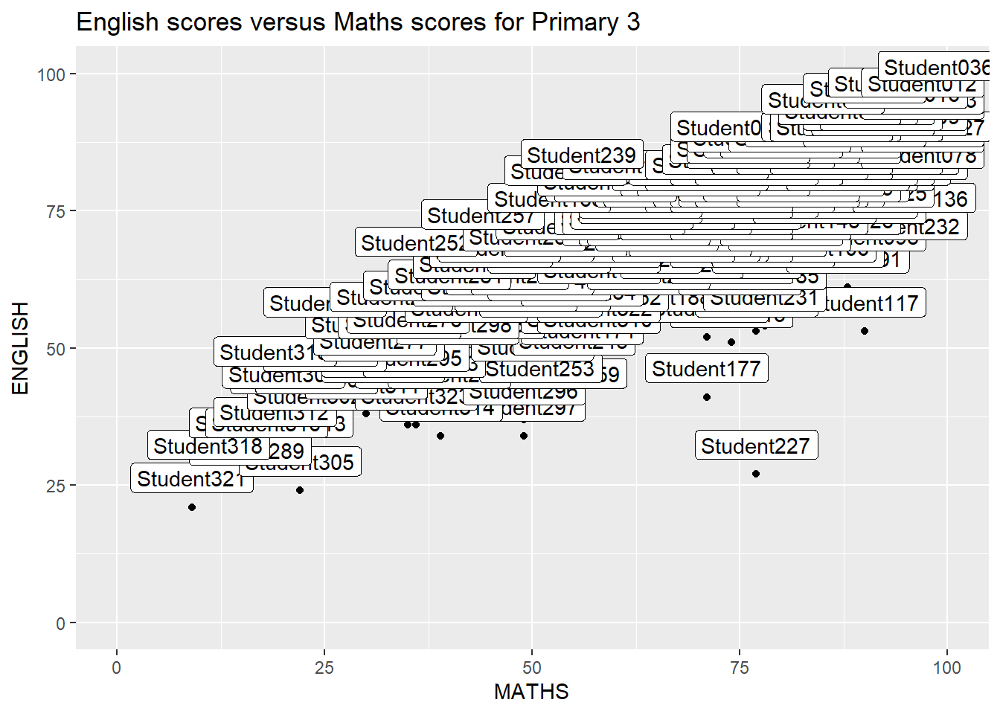
ggplot(data=exam_data,
aes(x= MATHS,
y=ENGLISH)) +
geom_point() +
geom_smooth(method=lm,
linewidth=0.5) +
geom_label(aes(label = ID),
hjust = .5,
vjust = -.5) +
coord_cartesian(xlim=c(0,100),
ylim=c(0,100)) +
ggtitle("English scores versus Maths scores for Primary 3")ggrepel is an extension of ggplot2 package which provides geoms for ggplot2 to repel overlapping text, simply replace geom_text() by geom_text_repel() and geom_label() by geom_label_repel.
2.3.1 Working with ggrepel
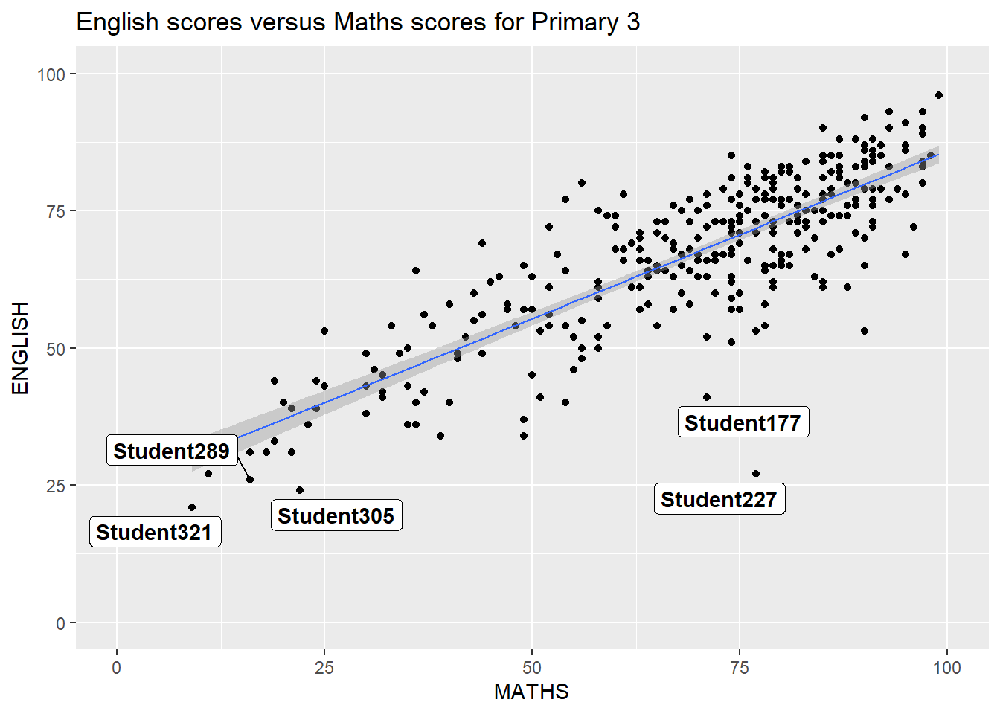
ggplot(data=exam_data,
aes(x= MATHS,
y=ENGLISH)) +
geom_point() +
geom_smooth(method=lm,
size=0.5) +
geom_label_repel(aes(label = ID),
fontface = "bold") +
coord_cartesian(xlim=c(0,100),
ylim=c(0,100)) +
ggtitle("English scores versus Maths scores for Primary 3")2.4 Beyond ggplot2 Themes
ggplot2 comes with eight built-in themes: theme_gray(), theme_bw(), theme_classic(), theme_dark(), theme_light(), theme_linedraw(), theme_minimal(), and theme_void().
Following code chunk demonstrates theme_light:
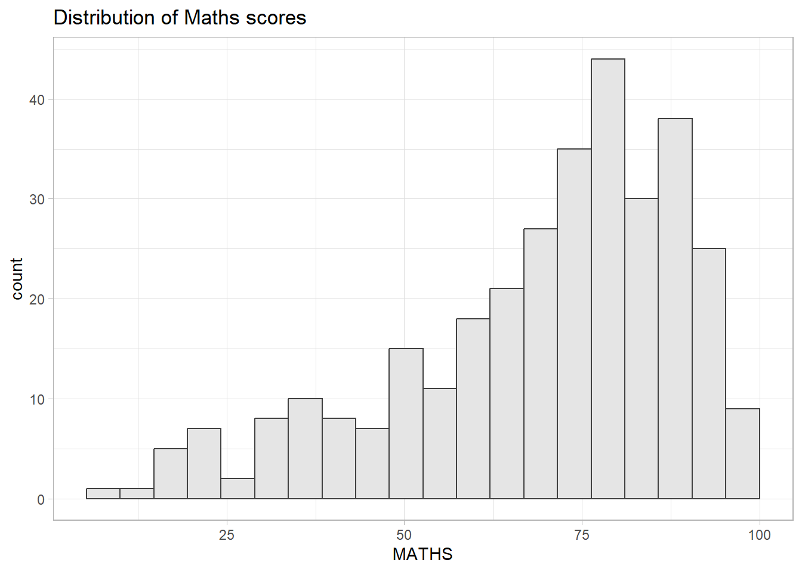
ggplot(data=exam_data,
aes(x = MATHS)) +
geom_histogram(bins=20,
boundary = 100,
color="grey25",
fill="grey90") +
theme_light() +
ggtitle("Distribution of Maths scores") 2.4.1 Working with ggtheme package
ggthemes provides ‘ggplot2’ themes that replicate the look of plots by Edward Tufte, Stephen Few, Fivethirtyeight, The Economist, ‘Stata’, ‘Excel’, and The Wall Street Journal, among others.
Following code chunk uses Economist theme:
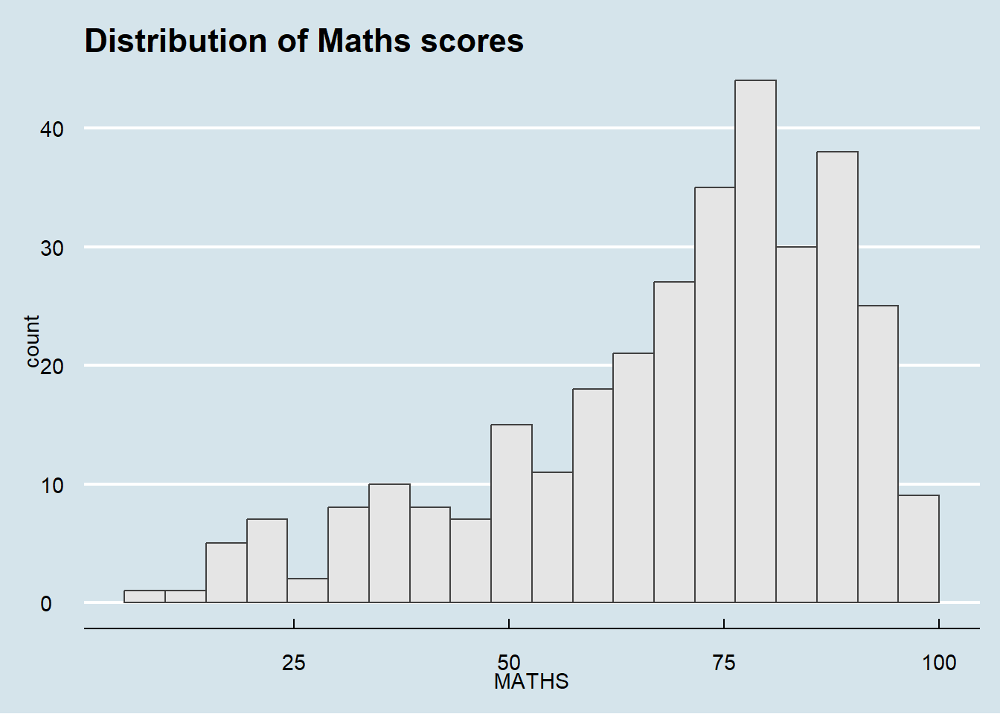
ggplot(data=exam_data,
aes(x = MATHS)) +
geom_histogram(bins=20,
boundary = 100,
color="grey25",
fill="grey90") +
ggtitle("Distribution of Maths scores") +
theme_economist()2.4.2 Working with hrbthems package
hrbrthemes package provides a base theme that focuses on typographic elements, including where various labels are placed as well as the fonts that are used.
Following code chunk uses theme_ipsum

ggplot(data=exam_data,
aes(x = MATHS)) +
geom_histogram(bins=20,
boundary = 100,
color="grey25",
fill="grey90") +
ggtitle("Distribution of Maths scores") +
theme_ipsum()The second goal centers around productivity for a production workflow. In fact, this “production workflow” is the context for where the elements of hrbrthemes should be used. Check this link for more information.
Following code chunk demonstrates the following:
axis_title_sizeargument is used to increase the font size of the axis title to 18,base_sizeargument is used to increase the default axis label to 15, andgridargument is used to remove the x-axis grid lines.
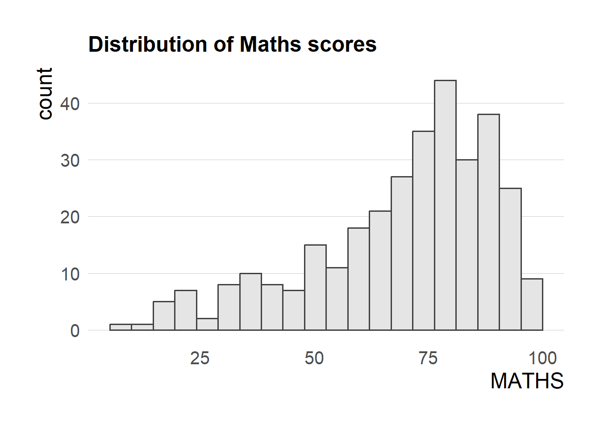
ggplot(data=exam_data,
aes(x = MATHS)) +
geom_histogram(bins=20,
boundary = 100,
color="grey25",
fill="grey90") +
ggtitle("Distribution of Maths scores") +
theme_ipsum(axis_title_size = 18,
base_size = 15,
grid = "Y")Troubleshooting:
If there is warning “font family not found in Windows font database”, run the following code (optional):
library(extrafont)
loadfonts(device = "win")2.5 Beyond Single Graph
In some cases, multiple graphs are required to tell a compelling visual story. There are several ggplot2 extensions provide functions to compose figure with multiple graphs.
Following code chunks create three statistical graphics
1. Distribution of Match scores
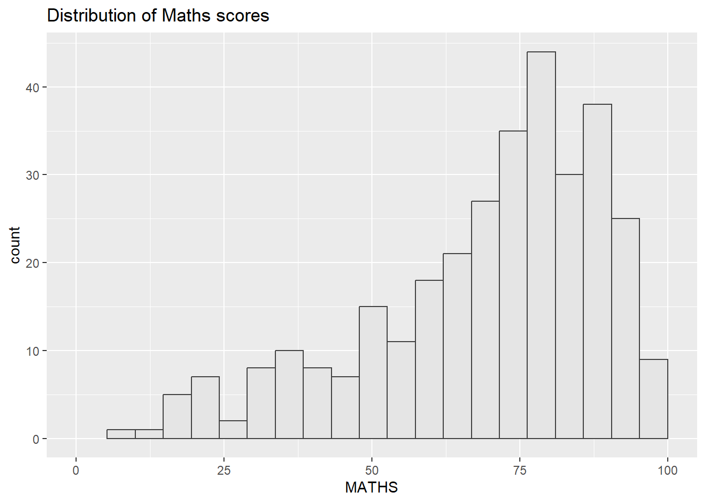
p1 <- ggplot(data=exam_data,
aes(x = MATHS)) +
geom_histogram(bins=20,
boundary = 100,
color="grey25",
fill="grey90") +
coord_cartesian(xlim=c(0,100)) +
ggtitle("Distribution of Maths scores")2. Distribution of English score
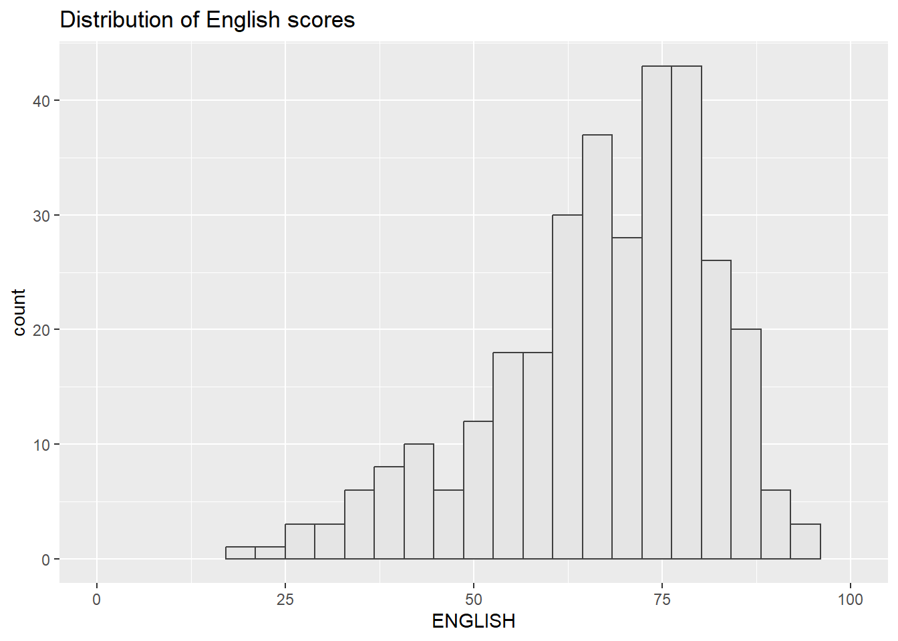
p2 <- ggplot(data=exam_data,
aes(x = ENGLISH)) +
geom_histogram(bins=20,
boundary = 100,
color="grey25",
fill="grey90") +
coord_cartesian(xlim=c(0,100)) +
ggtitle("Distribution of English scores")3. Scatterplot for English score versus Maths score
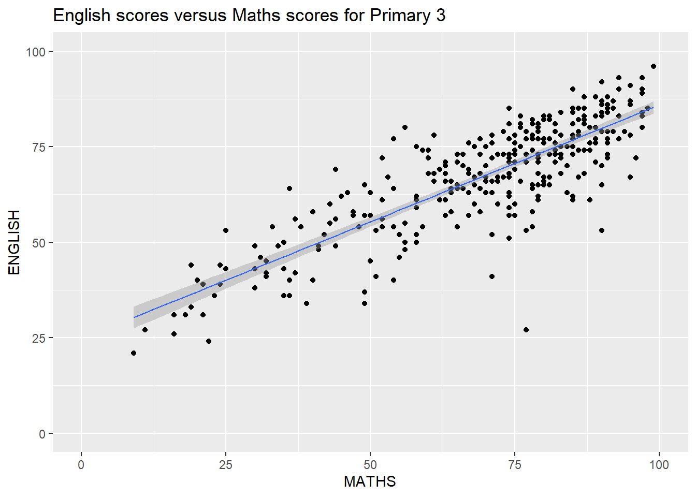
p3 <- ggplot(data=exam_data,
aes(x= MATHS,
y=ENGLISH)) +
geom_point() +
geom_smooth(method=lm,
size=0.5) +
coord_cartesian(xlim=c(0,100),
ylim=c(0,100)) +
ggtitle("English scores versus Maths scores for Primary 3")2.5.1 Creating Composite Graphics: pathwork methods
There are several ggplot2 extension’s functions support the needs to prepare composite figure by combining several graphs such as grid.arrange() of gridExtra package and plot_grid() of cowplot package. Patchwork extension is specially designed for combining separate ggplot2 graphs into a single figure. This package has a very simple syntax where we can create layouts super easily. Here’s the general syntax that combines:
Two-Column Layout using the Plus Sign +.
Parenthesis () to create a subplot group.
Two-Row Layout using the Division Sign
/
2.5.2 Combining two ggplot2 graphs
Figure below shows a composite of two histograms created using patchwork, it uses very simple syntax to create the plot.

p1 + p22.5.3 Combining three ggplot2 graphs
We can plot more complex composite by using appropriate operators. For example, the composite figure below is plotted by using:
“/” operator to stack two ggplot2 graphs,
“|” operator to place the plots beside each other,
“()” operator the define the sequence of the plotting.
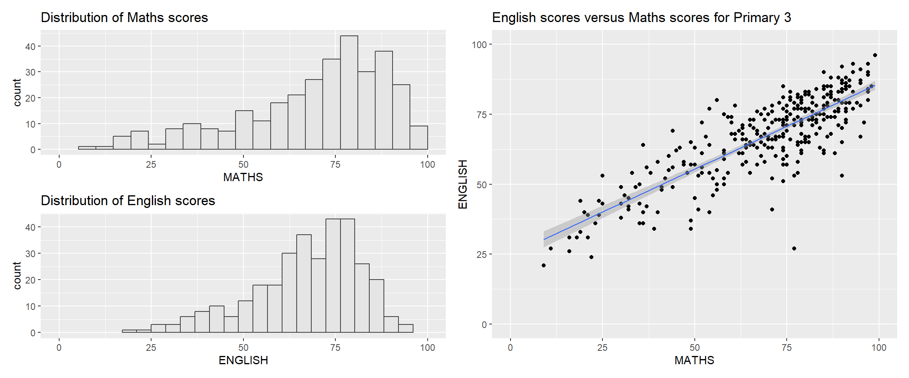
(p1 / p2) | p32.5.4 Creating a composite figure with tag
In order to identify subplots in text, patchwork also provides auto-tagging capabilities as shown in the figure below.
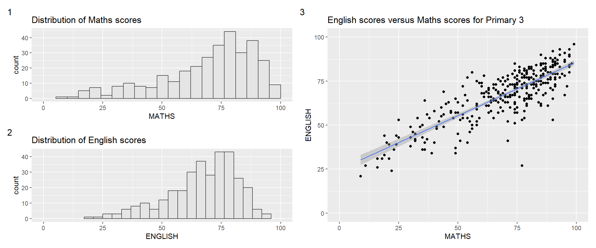
((p1 / p2) | p3) +
plot_annotation(tag_levels = '1')Other tagging options:
| Level Code | Result |
'a' |
Lowercase letters (a, b, c) |
'A' |
Uppercase letters (A, B, C) |
'1' |
Numbers (1, 2, 3) |
'i' |
Lowercase Roman numerals (i, ii, iii) |
'I' |
Uppercase Roman numerals (I, II, III) |
2.5.5 Creating figure with insert
The inset_element() of patchwork can place one or several plots or graphic elements freely on top or below another plot, as demonstrated in the following code chunk:

p3 + inset_element(p2,
left = 0.02,
bottom = 0.7,
right = 0.5,
top = 1)2.5.6 Creating a composite figure by using patchwork and ggtheme
Code chunk combines patchwork and theme_economist() of ggthemes package.
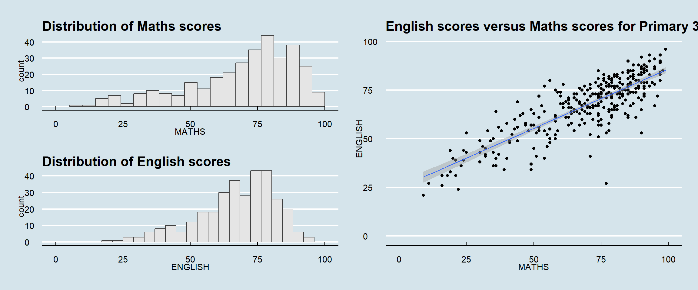
patchwork <- (p1 / p2) | p3
patchwork & theme_economist()